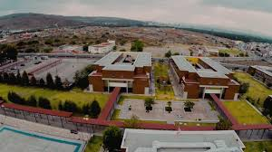

En la Universidad Politécnica de San Luis Potosí estamos comprometidos con la formación integral de nuestros estudiantes a fin de que logren desarrollarse como profesionistas exitosos y personas útiles a la sociedad. Para ello, ofrecemos programas educativos pertinentes, vinculación con el entorno socioeconómico, investigación aplicada, desarrollo científico y tecnológico, gestión de la propiedad intelectual, consultoría y educación continua. Reconocemos que la vía para lograrlo es la atención a los requisitos pertinentes de las partes interesadas y la mejora continua de nuestro sistema de gestión.
Nos comprometemos a actuar con responsabilidad social conforme a nuestros valores, para asegurar una armónica convivencia entre los miembros de la comunidad universitaria, realizando acciones para la prevención de factores de riesgo psicosocial y la violencia laboral, y promoviendo al mismo tiempo un entorno organizacional favorable; a mantener condiciones de seguridad, higiene y salud que salvaguarden la integridad física de todos los miembros de nuestra comunidad; a preservar y mejorar el medio ambiente, contribuyendo al desarrollo sostenible de nuestro entorno y sociedad.
Aspiramos a ser una Universidad consolidada en su tarea de formar profesionales competentes, que se distinguen por su aportación al desarrollo de México y de San Luis Potosí y cuentan con reconocimiento en sus campos de actividad profesional y en su vida comunitaria.
La Universidad Politécnica de San Luis Potosí representa un espacio de desarrollo intelectual que atrae el mejor talento, tanto de estudiantes como profesores, que se sienten orgullosos de pertenecer a esta comunidad académica.
La Universidad aprovecha eficazmente la tecnología para el trabajo académico, manteniéndose a la vanguardia en la incorporación de nuevas tecnologías y utilizándolas en forma intensiva en sus procesos de formación, investigación y gestión.
La Universidad desarrolla actividades estratégicas en el campo de la innovación tecnológica en las áreas de conocimiento que cultiva, siendo un participante activo del sistema de innovación de la región, realizando proyectos conjuntos con empresas y gobiernos y ofreciendo servicios de capacitación, consultoría y desarrollo tecnológico de alto nivel al sector empresarial. Forma parte de redes de colaboración académica, nacionales e internacionales, en las cuales contribuye en temas de vanguardia tecnológica.
La Universidad se caracteriza por una intensa vida académica y cultural, que abre sus puertas cotidianamente a la sociedad para compartir y difundir con ella sus trabajos científicos, tecnológicos y culturales.